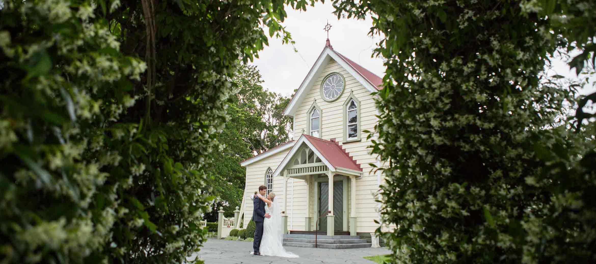

The Old Church in Meeanee has a fascinating history dating back 150 years to its first incarnation in 1862 when the missionaries began planting vines and cultivating the land around St Mary’s. The brothers were popular, industrious and very successful farmers, sharing their skills and ideas freely. Their warm hospitality, easy friendship and legendary culinary skills made the mission a favourite stopping place for travellers and it is in their esteemed footsteps that this tradition continues today.
Set amongst the vines, with a stunning aspect to the Ruahines, Kaweka’s and the setting sun, the unswerving attention to detail and luxurious décor make this a stunning Hawke’s Bay landmark.
The vision for The Old Church has been realised by creating an unsurpassed blend of nostalgia and chic indulgence. The unique experience of The Old Church will be a memory to treasure for years to come.
